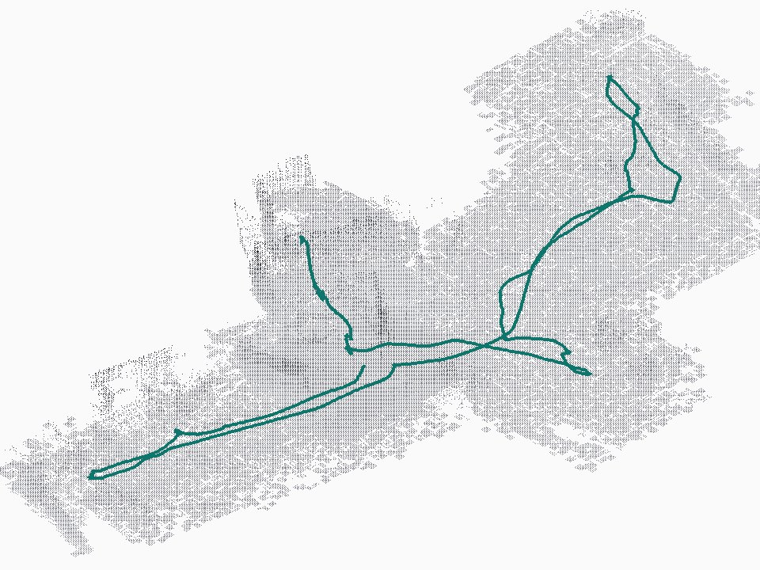
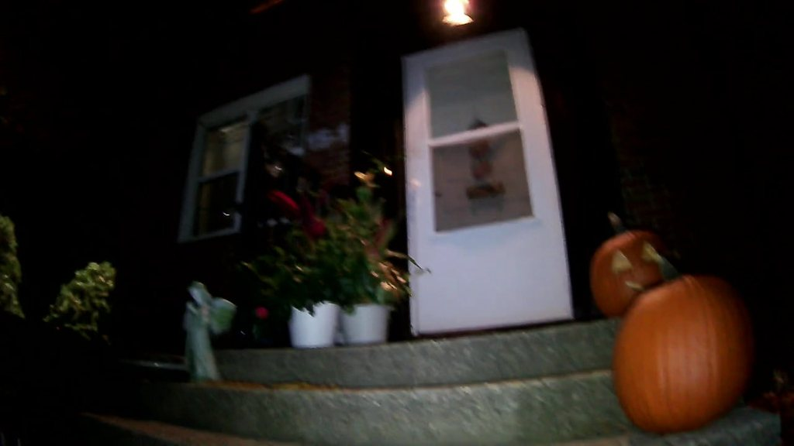
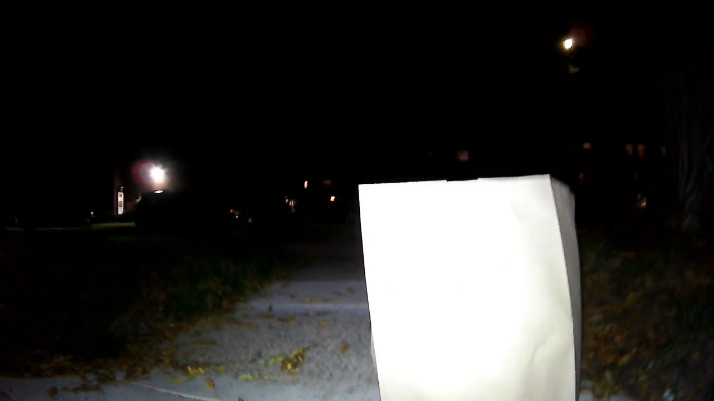

BenBenHow it behaves
Community accessibility · route inspection
A robot dog that checks if the route is passable.
Six behaviours of the architecture we’re building.
 Unitree Go2 · official model render
Unitree Go2 · official model render
I got injured and ended up in a wheelchair … I had no idea if my route to the bus was even passable.
Shivraj, who built BenBen
Today, owners
learn about barriers from whoever couldn’t pass.
Today, routing apps
run on map data that can be years old.
01How it behaves

LiDAR map01
Notices change
Geometry decides when to look. Vision decides what it is.

SAM 3.1 · paper bag
02
Judges with evidence
One action, an outlined object and a cited frame.
 Too dark
Too dark
✓ Usable03
Won’t clear in the dark
The latest usable view wins.

Real frame04
Asks one question
When unsure, one question a person answers with a tap.
05
Goes back to look
An issue stays open until a fresh view clears it.
 LiDAR map
LiDAR map06
Plans its next look
A reasoner picks the next stop from open issues and stale checkpoints.